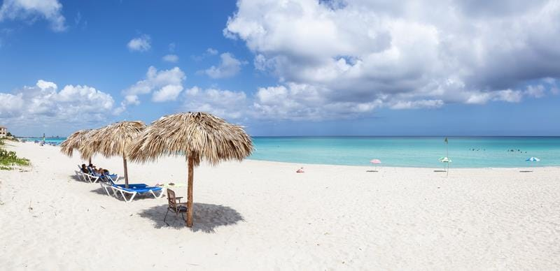
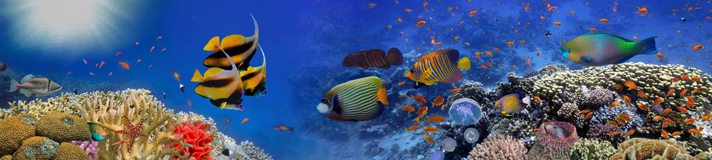
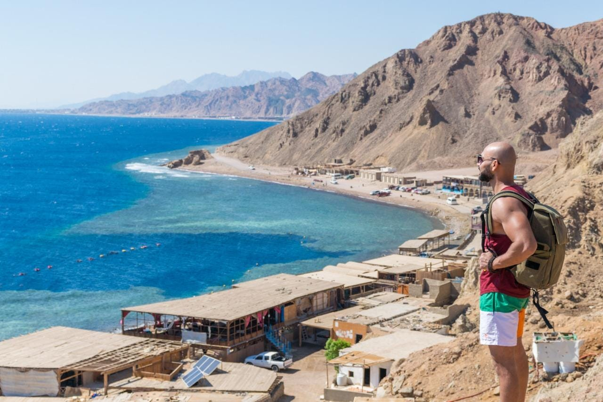

There are a few places in the world with beaches that can rival the beauty and diversity of Egypt’s coastlines, offering escapes to visitors all year round.

Turquoise waters, white sandy beaches, and brisk salty air that is best enjoyed between the months of June and September. The 1,050 km of coastline is a favorite traditional summer vacation destination for Egyptians, dotted with resorts and gated communities that transform into a summer home away from home for Egyptians during the peak summer vacation months of July and August. This stretch of pristine beach connects Alexandria to Marsa Matruh, passing through New Alamein city, inviting visitors to explore countless locations to enjoy the dazzling waters and sandy shorelines.

crystal-clear waters and vibrant coral reefs for exploration, ideal for year-round swimming, diving, snorkeling, and a variety of water sports and activities. Visitors can head to Hurghada for a vacation full of water sports, family fun, and lively nighttime entertainment. The beach town of Al-Gouna offers kid-friendly splashing, snorkeling, wind sports, and cultural spots. For more kid-friendly fun, head to Makadi Bay Resort for a full-fledged water park that is sure to keep the whole family occupied for hours. Relax with luxury spa treatments in Soma Bay or holistic natural treatments, like black sand therapy, in Safaga. The awe-inspiring raw nature of Marsa Alam, due to its proximity to pristine nature reserves, offers chances for hiking and unbeatable diving experiences. For a quick escape from Cairo, catch some rays at the beach in Ain al-Sokhna, a touristic town only an hour and half by car from Egypt’s capital.

Is full of spotless beaches, dramatic mountains, and untouched nature, offering visitors a chance to fully disconnect and relax in a peaceful escape. This is where you will find South Sinai’s famous beaches of Sharm al-Sheikh, Dahab, Nuweiba, and Taba, with some of the calmest waters and most picturesque scenery in the country. Unwind with year-round warm weather, sunny days, and some of the Red Sea’s most unique marine life and breathtaking coral reef. Nature reserves near Sharm al-Sheikh and Dahab offer secluded beaches for those wanting a peaceful escape with the dramatic backdrop of massive red mountains. Ras Sudr is the closest beach town on the peninsula, only a two-and-a-half-hour drive from Cairo, offering a beautiful coastline with beachfront lodgings and some of Egypt’s best winds for kitesurfing.